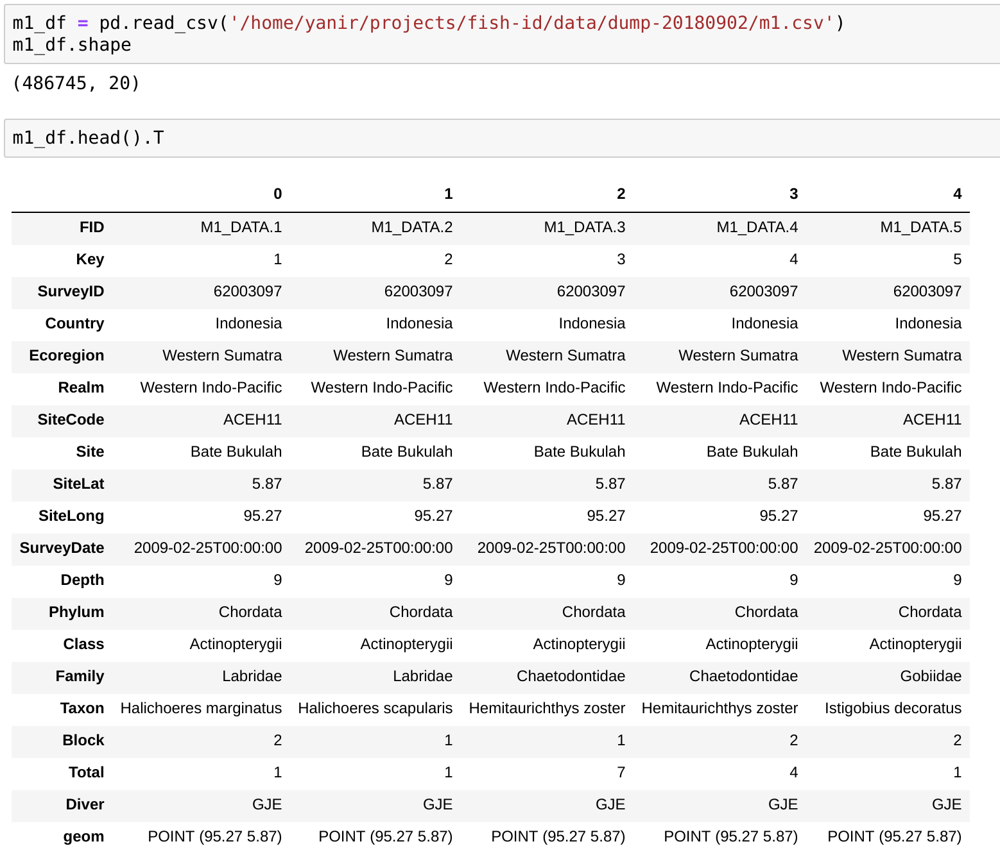

Exploratory Data Analysis
Let's break it up...
Exploratory
explore
travel through (an unfamiliar area) in order to learn about it
wander
walk or move in a leisurely or aimless way
Data
Relevant to the topic of exploration
May require collection
Size doesn't matter
Analysis
Last but not least
Tools don't matter
Question!
Me: How likely am I to see a wobbegong on my next dive?
You: A wobbe-what?
Me: A wobbegong!
You: Let's check Wikipedia...
Wobbegong is the common name given to the 12 species of carpet sharks in the family Orectolobidae. They are found in shallow temperate and tropical waters of the western Pacific Ocean and eastern Indian Ocean, chiefly around Australia and Indonesia, although one species [...] occurs as far north as Japan. The word wobbegong is believed to come from an Australian Aboriginal language, meaning "shaggy beard".
You: What kind of wobbegong?
Me: Any kind will do, thanks!
Reef Life Survey Data
What is Reef Life Survey?

How is RLS data collected?
Getting the data
Time for some analysis!
Data format and semantics
Requires digging to find the Nature article, but some metadata is better than none
| Field | Description |
|---|---|
| SiteCode | Identifier of unique geographical coordinates (usually 2–3 letters followed by numeric string) |
| Site | Descriptive name of the site |
| SiteLat | Latitude of site (WGS84) in Decimal degrees |
| SiteLong | Longitude of site (WGS84) in Decimal degrees |
| Country | Country (or largely-autonomous state) |
| Ecoregion | Location within the Marine Ecoregions of the World provided in Spalding et al. |
| Realm | Biogeographic realm as classified in the Marine Ecoregions of the World |
| SurveyID | Identifier of individual 50m transects (numeric string) |
Data format and semantics (cont.)
| Field | Description |
|---|---|
| Depth | Mean depth in metres of transect line as recorded on dive computer (note: this does not account for tide or deviations from the mean value as a consequence of imperfect tracking of the depth contour along the bottom) |
| SurveyDate | Date of survey (format: dd-month-yy) |
| Diver | Initials of the diver who collected the datum (two to four letter unique identifier) |
| Taxon | Species name, corrected for recent taxonomic changes and grouping of records not at species level |
| Family | Taxonomic family |
| Block | Identifies which 5m wide block (of two) within each complete transect (SurveyID): 1 (block on deeper/offshore side of transect line), 2 (block on shallower/inshore side) |
| Total | Total abundance for record on that block, transect, site, date combination (numeric string) |
Or more generally...

+ structure and constraints
But what about the wobbies?
No mapping from common name to scientific in the data
...but we have the family (Orectolobidae)
Let's have a quick look...
First look at the data
Yep, there are some wobbies there!
Is this enough to answer my question?
Dataset limitations:
- Mostly 'straya, mate
- Shallow waters
- Reefs
- Frequency? Coverage? Quality?
It's good enough as a start, let's dig deeper
Descriptive statistics
Examples of descriptive statistics
Location: mean/median/mode/percentile rank
Spread: standard deviation/median absolute deviation/interquartile range
Shape: skewness/kurtosis
Dependence: Pearson/Spearman correlation coefficient
Recommended reading:
Unlearning descriptive statistics
Describing our dataset with pandas
Diving deeper...
Outliers: Zero depth?
Outliers: 32,000 fish?!
Let's not forget the wobbies!
Let's make the numbers more visual!
The classic box plot alternative
Exploratory data visualisation
Doesn't need to be pretty
Doesn't need to be accessible to others
Should be useful and accurate enough
Simple visualisations can uncover interesting patterns
Knowing the data's meaning can help
And the wobbies?
Zooming in...
External data can help uncover issues
Aggregations may yield useful insights
Conclusion
Main takeaway: Be the data
Be the data
The better you know your data, the better your models will be
Can explore forever
...but know when to move to other tasks
...and when to find better data